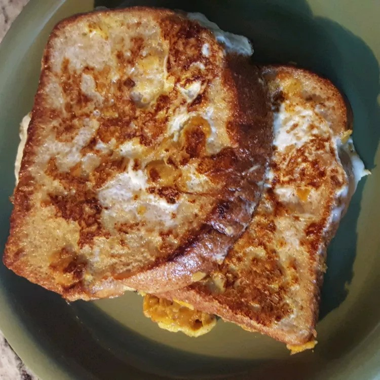

Toast

Description
Because I know nothing about food, I keep the description short
Ingredients
- ¼ cup milk
- 3 large eggs
- 2 ½ tablespoons maple syrup
- 1 teaspoon vanilla extract
- 1 teaspoon ground cinnamon
- ⅓ cup cornflakes cereal, crumbled
- 8 slices white bread
- 2 tablespoons confectioners' sugar for dusting
- 1 tablespoon vegetable oil, or as needed
Steps
- Whisk milk, eggs, maple syrup, vanilla, and cinnamon together in a medium bowl.
- Add crumbled cornflakes and stir to combine.
- Working in batches, soak 1/2 of the bread slices in the mixture for about 2 to 3 minutes.
- Heat oil in a large skillet or griddle over medium-high heat.
- Cook soaked bread slices in the hot skillet until dark golden brown, 4 to 5 minutes per side.
- Repeat to soak and cook remaining bread.
- Sprinkle hot French toast with confectioners' sugar. Serve immediately.
More recipes